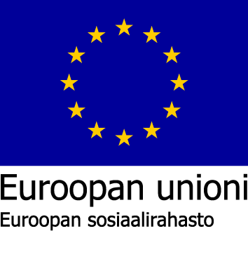

<footer class="theme-footer" color="primary">
  <hr>

  <div id="icon-container">
    
    
    
    

    <!-- <div class="spacer"></div> -->

    <mat-nav-list color="primary">
      <a  (click)="openPrivacyModal()"
          i18n="@@Tietoturvaseloste"
          (keyup.enter)="openPrivacyModal()"
          mat-list-item
          tabindex=0>Tietoturvaseloste
      </a>
      <a href="https://www.oulu.fi/fi" target="_blank" mat-list-item i18n="@@Oulun Yliopisto">Oulun Yliopisto</a>
      <a href="https://www.oamk.fi" target="_blank" mat-list-item i18n="@@OAMK">Oulun Ammattikorkeakoulu</a>
      <!-- (click)="onListItemClick($event)" -->
      <a href="https://interact.oulu.fi/site/digivertaisverkko" target="_blank" mat-list-item i18n="@@Digivertaisverkko">Digivertaisverkko</a>
    </mat-nav-list>

    <div id="about-software" i18n="@@Ohjelmistosta">Tämä on Digivertaisverkkohankkeen tuottama ohjelmisto. Digivertaisverkko on Euroopan
      sosiaalirahaston rahoittama hanke, joka on toteutettu Oulun Yliopiston ja Oulun Ammattikorkeakoulun yhteistyönä.
    </div>

  </div>

</footer>
